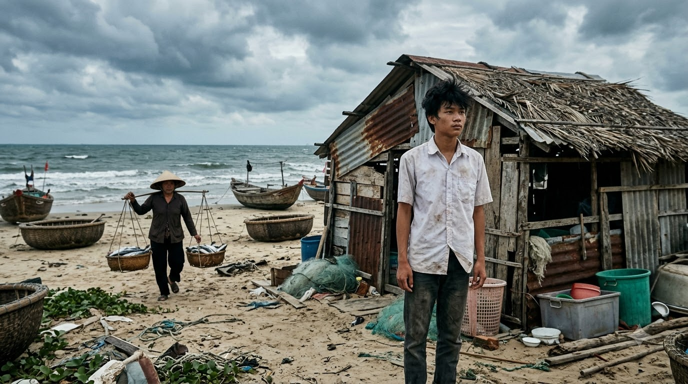
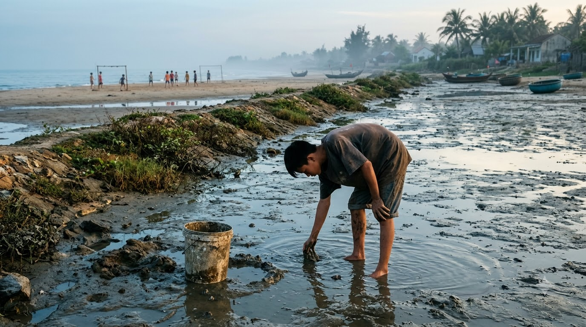
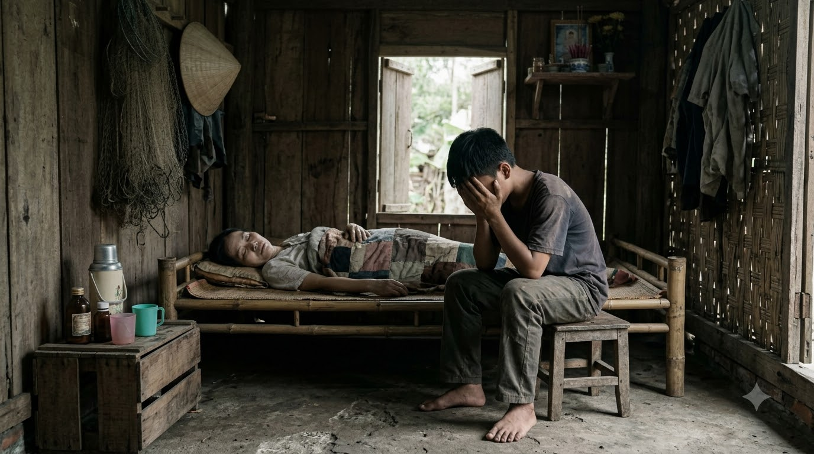
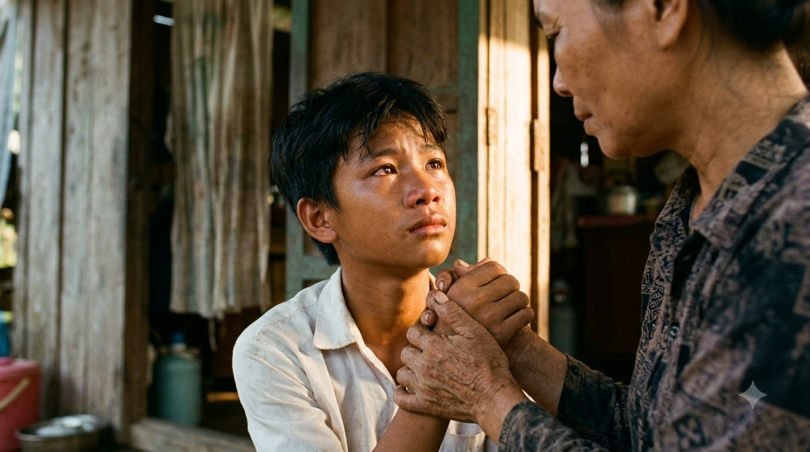

ÁNH SÁNG TỪ
ĐÔI VAI GẦY
Hành trình vượt lên số phận của cậu học trò nghèo nơi làng chài đầy nắng gió và bão giông.

Ở một làng chài nghèo ven biển, nơi những cơn gió mặn chát luôn rít qua từng kẽ lá, có một cậu học trò tên là Minh. Căn nhà của Minh chỉ là túp lều tạm bợ, trống huếch trống hoác mỗi khi mùa bão về. Ba mất sớm trong một chuyến biển xa, mẹ Minh một mình tần tảo sớm hôm với gánh hàng cá để nuôi hai anh em ăn học và chăm sóc người bà đau yếu.

Hằng ngày, khi mặt trời còn chưa kịp ló rạng, Minh đã thức dậy để giúp mẹ dọn hàng ra chợ. Đôi bàn tay nhỏ bé sớm chai sần vì phụ mẹ bưng bê, dọn dẹp. Buổi chiều sau giờ học, trong khi bạn bè cùng trang lứa mải mê với những trận đá bóng hay trò chơi điện tử, Minh lại lầm lũi ra bờ đê hái rau, mò cua bắt ốc để cải thiện bữa cơm gia đình.
Đến trường với bộ quần áo sờn rách và đôi dép đứt quai, Minh từng nhiều lần trở thành tâm điểm của những ánh nhìn ái ngại. Sách vở cũng chỉ là những cuốn cũ xin lại từ các anh chị khóa trước. Nhưng vượt lên tất cả sự mặc cảm, cậu luôn là người giơ tay phát biểu đầu tiên trong mỗi giờ học.
Dưới ánh đèn dầu leo lét mỗi đêm, cậu học trò nghèo miệt mài bên những trang vở cũ kĩ, mồ hôi nhễ nhại nhưng ánh mắt luôn rực sáng một quyết tâm sắt đá. Có những ngày mưa bão trắng trời, mái nhà dột nát khiến sách vở ướt nhòe, Minh phải vừa che nón lá vừa học bài.

Có những ngày mẹ ốm nặng, gánh cá ế ẩm góc chợ, Minh phải nghỉ học nhiều ngày liền để nấu cháo, bón thuốc cho mẹ và chăm sóc bà. Nhìn gia cảnh túng quẫn, cậu từng gục mặt vào đôi bàn tay chai sần của mình mà khóc nấc lên trong đêm tối vì sự bất lực.

Đã có lúc, vì quá thương mẹ vất vả, Minh định thắt lòng xin nghỉ học để đi làm thuê. Nhưng nhìn vào đôi mắt đầy kỳ vọng và đôi bàn tay thô ráp của mẹ, cậu lại tự nhủ phải cố gắng gấp bội. Minh hiểu rằng, chỉ có con chữ mới là con đường duy nhất cứu lấy cuộc đời mình.
Thầy cô ở trường biết hoàn cảnh đã xúm lại động viên, gom góp mua cho Minh bộ sách mới và chiếc đèn bàn. Sự ấm áp ấy thắp lại ngọn lửa khát vọng. Cậu thức trắng nhiều đêm liền để ôn luyện cho kỳ thi học sinh giỏi, dồn hết tâm huyết vào từng con số, từng phương trình.
Sự nỗ lực không mệt mỏi ấy cuối cùng đã nở hoa. Trong kỳ thi cấp quốc gia, Minh đã xuất sắc giành giải Nhất. Ngày nhận được học bổng toàn phần vào một trường đại học danh tiếng, Minh đứng trước biển, nhìn những con sóng vỗ bờ mà trào nước mắt.
Ngày xách ba lô lên thành phố nhập học, Minh ôm chặt lấy người mẹ hao gầy. Gió biển hôm ấy thổi lồng lộng như đang hát khúc ca tự hào tiễn bước chân chàng thanh niên. Đôi vai nhỏ bé ngày nào giờ đã vươn mình trở thành điểm tựa vững chãi cho cả gia đình.
Câu chuyện về "cậu bé làng chài" đã trở thành ngọn lửa truyền cảm hứng mạnh mẽ, khẳng định rằng:
“Gian khổ không phải là rào cản, mà chính là bệ phóng để những trái tim đầy nghị lực bay cao, bay xa hơn trên bầu trời tri thức.”
ÁNH SÁNG TỪ ĐÔI VAI GẦY
“Mỗi cơn sóng dữ đi qua đều để lại một bờ cát vững vàng hơn. Chỉ cần giữ vững ngọn lửa tri thức, mọi ước mơ đều tìm thấy bến bờ.”